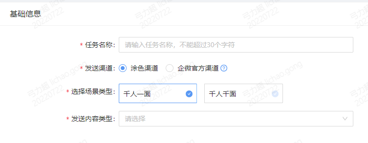
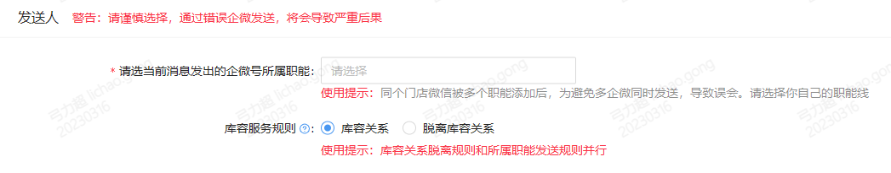

Created by 弓力超, last modified on 2023-03-17
人工任务
企微触达逻辑
简单描述这个过程就是（从左到右）：
| 基础前提 | 发送对象 | 发送内容 | 发送时间 | 发送规则 | 执行发送 |
|---|
小二必须把企微账号登陆到涂色比邻平台 平台才能提供机器人RPA能力 | 门店是对象 门店下面的联系人必须由小二完成过企微好友的绑定 系统才能知道发给哪个微信，用哪个企微能发 | 触达中心里面完成录入 | 触达中心里面完成设定 | 触达中心里面完成设定 | 涂色机器人会通过私聊的形式，以很快的频率，将设定内容，自动化的通过指定的企微号发给指定的好友，从而实现类似于群发的形式。 |
企微触达必备前提
参考上面有写，这里的前提是必须完成以下几个事情：
| 必备前提事项 | 要求/说明 | 备注 |
|---|
| 企微托管到涂色系统 | - 不得掉线。掉线了一切群发动作都会失败。
- 登陆客户端或者是网页版，有不同的登陆要求。
- 登陆后存在封号风险。建议客户均匀分布。
| 涂色的相关使用可以参考：川枫-涂色比邻 |
| 门店和企微客户有绑定关系 | - 门店和联系人，一旦绑定过一次，后续即使多个企微添加该联系人，只要联系人的微信没换，就不需要重新绑定。绑定是个一次性的动作。
- 门店和联系人，绑定过企微客户关系，才能发送。否则系统不知道发给谁。
- 多个企微共同加一个客户的情况下，默认根据库容关系来选择走哪个微信号
| 门店微信如何绑定可以参考：03-门店微信管理 |
| 具备发送内容和规则 | - 单个任务最多三条信息，格式不限，所以内容要提前规划好，不要超过数量。
- 发送速度是固定的，难以调整到一秒触达所有门店。这个时间需要考虑清楚。
|
|
触达任务发布系统
任务列表
| 功能项 | 使用说明 |
|---|
| 任务tab | - 此处可以根据用户权限和角色，切换查看全部触达任务、我的任务、下属任务。
|
| 任务规则管理 | - 管理触达中心可发送内容和条数的规则。
- 具备特殊权限才可以看到和使用该功能按钮。
|
| 任务状态 | - 待发送
- 正在发送
- 任务完成
- 任务取消
- 任务暂停
|
| 明细查看 | - 推送进度：这里可以查看总体任务进度和明细进度，例如失败原因等。
- 推送日志：这里可以查看任务总体耗时、开始结束具体时间、发送速度等参数结果
- 投放数据：包含商品拍口令的触达任务，会展示该按钮，可以查看该拍口令的打开转化情况。
|
| 任务操作 | - 复制任务
- 取消发送：取消后无法恢复，只能复制任务。
- 暂停发送：暂停后，如果隔天，无法继续发送。
|
任务新建
基础信息

| 功能项 | 使用说明 |
|---|
| 任务名称 | - 用于识别和区分触达任务
- 任务不可重名
|
| 发送渠道 | - 涂色渠道：是指发送通过涂色RPA机器人实现。理论上通过该系统，可以单日无限次数进行群发（我们自己管理），但是无法一秒钟群发触达所有用户。
- 企微官方渠道：通过企微官方群发渠道发布。限制每天一条。但是可以一秒钟群发触达无数用户。具体限制规则参考企业微信如何群发消息到客户群-帮助中心-企业微信 (qq.com)
|
| 场景类型 | |
| 内容类型 | - 内容类型用来区分和管理不同的消息类型对门店的群发影响。避免过渡骚扰。
- 不同的内容类型，会决定小程序可选哪些，是否支持商品拍口令录入。
- 不同的触达中心使用角色，具备不同权限去管理和查看不同的内容类型。参考下图
|
发送对象
| 功能项 | 使用说明 |
|---|
| 门店范围 | - 指定门店：默认选中这个。必须依赖一个门店圈选结果，划定发给哪些门店。
- 全部门店：具备该权限的小二（触达管理白名单用户）可以选择该选项。不用做任何权限，发给全部可触达的平台用户。
|
| 门店圈选 | - 默认只能选择当前用户自己创建或者负责的dmp圈选结果。
|
发送人

| 功能项 | 使用说明 |
|---|
| 企微号所属职能 | - 必须选择一个职能，单选。不要乱选。根据实际业务情况选择。
- 存在的原因是多个企微都加了一个门店微信的场景下，如果不做区分，会对门店进行多次发送，造成骚扰。
- 这里产品的过滤逻辑如下图

|
| 库容服务规则 | - 基于库容关系：电销企微号必须是门店联系人微信的好友，并且该门店属于该企微号背后电销的库容门店。
- 脱离库容关系：电销企微号必须是门店联系人微信的好友，但是库容关系不会成为过滤条件。该规则目前仅限微商电销。
这个功能可否使用，也是通过权限控制的。请谨慎申请和使用。导致的拉黑删除率较高。 |
发送内容
| 功能项 | 使用说明 |
|---|
内容条数 | 上限为3条 |
| 插入标签 | - 标签可以实现每个门店的定制化展示，例如性别，男老板展示为大哥。
- 标签是跟随门店圈选的，不同的门店圈选，可用的标签不同。
- 目前已有标签：
- 微信对应的联系人的性别
- 门店所在省
- 门店具体名称
- 门店合作B类品牌
|
| 插入商品变量 | - 该按钮只有在千人千面的场景下可用。
- 变量有哪些，依赖于店品策略选的是哪个，不同的店品策略，变量不同。
- 变量的名称，必须和算法团队提前沟通好，一个萝卜一个坑。
- 变量的顺序，由算法推荐排序决定，所以也是得提前确认好。
- 变量排序最多支持5个。
|
| 插入拍口令 | - 拍口令通过这里插入的功能（而不是直接复制文案进去）能够提供的价值是，定制一个新的口令，从而可以追踪这个群发的结果，不会和其他渠道混起来。
- 口令可以设定为页面的，也可以设定为单品的商详页面。
- 如果是千人千面，单品拍口令插入，必须跟在变量后面插入，否则系统完全不知道哪个商品。如果是千人一面，可以直接录入商品id实现。
|
| 插入小程序 | - 发送到哪个小程序，目前千人千面只能选择“下单小程序”，千人一面的话还可以选择“hi仓酷”
- 发送到什么样的落地页面，这个和消息类型有关。
- 小程序页面链接，需要输入小程序内部链接，不是海拍客的官方链接。这个通常需要找PD或者前端负责人进行转译。
- 小程序标题和文案内容有点类似，可以支持变量插入，也是依赖上面所选的店品策略。
- 封面图的合成，可以是统一的一张（指定上传图片），也可以是图片合成。
- 图片合成需要选择模板id，不同的模板ID对应不同的合成样式。目前是定制化的。
|
| 开启AB测试 | - 当前只能支持流量定量占比测试，四等分，25%为值开始累计。
可添加最多4组内容进行对照测试，并配置流量划分，所有测试组的流量划分占比之和必须等于100%，将根据流量划分占比分别发送给圈选的对应占比数量联系人 每组内容可添加3条消息
|
发送规则

| 功能项 | 使用说明 |
|---|
发送时间 | - 定时发送可以指定某个未来时间点。但是该时间点是否有效，要依赖保存任务时间（不能说定时在1h后发，但是任务保存时2h后才保存的）
|
| 发送速度 | - 紧急是指时间间隔5-10s
- 一般是指10-20s
- 不紧急是指20-30s
这里的间隔是指，同一个企微，发给他的两个客户之间的间隔时间。无法缩短，越短的时间，封号的可能性越高。 |
| 发送预测时间 | 这里是基于所选的发送速度、圈选的门店数量。文案复杂程度，来预估的一个时间。作为参考，实际发送时间不能强制被拿来对比。 |
任务发送结果明细查看
| 功能项 | 使用说明 |
|---|
整体进度 | - 此处展示的是整个任务的实际发送进度。
- 触达失败的这里，部分由于我司内部原因导致的发送失败，在当天，可以支持二次推送尝试。（录入涂色掉线等，可以支持二次推送的失败原因，在明细清单页面可以看到）
|
| 功能项 | 使用说明 |
|---|
企微号进度 | - 这里把该条任务中，所涉及到的企微号，在企微号维度进行统计进度。
- 如果一个任务发送满，可以看下这里，哪个企微号的发送人数最多，可能是这个企微号拖慢了任务的总进度。
- 因为一个任务的发送，所有企微号是同时开始的，所以某个任务的最长耗时，就是要发送客户数量最多的哪个企微号。
|
| 功能项 | 使用说明 |
|---|
明细清单 | - 这里是按照每一对要发送消息的好友关系的维度进行展示。
- 可以支持导出数据进行统计。
|
任务发送整体日志
| 功能项 | 使用说明 |
|---|
任务日志 | - 此处展示的任务总耗时，是实际完成时间。和预估时间并不是完全一致。
- 变更记录明细这里，可以看到不同的任务阶段，分别是什么时间开始的。
- 对于千人千面的任务，系统数据计算时间这一项，最长不会超过30min。如果超过了，就是有问题，需要提供给pd排查。
- 如果一个任务被暂停了，或者被取消了，这里的操作人会展示是谁操作的。
|
触达规则管理系统
谁可以使用触达中心
谁可以发送哪些消息类型，以什么样的频率，发给哪些门店客户，超出发送额度后如何处理
一个门店每天最多接收多少次群发，分别由哪些消息类型组成
——所谓的管理系统，主要是回答以上问题。所以这里主要是企微相关运营同学使用。
管理功能逻辑
| 功能项 | 使用说明 |
|---|
| 触达中心发送角色选项 | - 发送角色有哪些，是预设的，无法自动增加，请对号入座。如果发现有缺少或需要变更，请提给PD
- 不同的角色，群发所使用的企微账号，可能是相同的。请注意并计算该企微对客户的骚扰。
|
| 任务类型和条数限制 | - 单个角色，可以使用哪些任务类型，这里是预设的。参考右侧图片。
- 单个角色，使用的任务类型，每天可以给门店发送的任务条数，是一个组合值。
- 单个角色，可以有多个任务类型的组合值。多个组合值之间，是累加的。
|
| 角色类型条数限制 | - 单个角色所创建的任务，如果有多个组合值，单日一共可以向门店发送的任务数量，还存在一个总阀门。就是角色类型条数限制。
- 如果多个组合值之和，小于等于这个总阀门值，那么都可以顺利发出。反之如果小于，那么按照任务发送顺序，先发出去的任务，会导致超额后的任务发送失败。
- 不同角色之间，发送条数的控制，是互相不干扰的。
|
| 白名单控制 | 这里可以单独录入一些小二，对其赋予更多的发送权利。具体权利如下图。
|
系统任务
| 功能项 | 使用说明 |
|---|
| 任务状态 | - 系统任务列表页中，右上角的任务开关，处于开启状态的系统任务，处于正常激活状态会执行。开关关闭后，系统任务停止发送。
|
| 系统消息配置 | - 对系统任务的发送内容和对象等进行修改编辑。
- 这里暂时没有严格权限控制，请勿随意修改非自己的任务。
|
| 发送明细 | - 单个系统任务的发送历史记录可以查看。按照每次发送的维度进行了划分。
|
任务类型区分
简单重复任务建立
| 功能项 | 使用说明 |
|---|
| 简单重复任务的定义 | - 发送对象可以通过dmp圈选的出来。
- 发送时间通常是某个固定时间点。
- 发送内容不依赖系统算法推出的变量。
可以理解为，一个人工千人一面的任务，需要隔一段时间，系统自动执行一次。 |
| 简单重复任务的创建 | - 发送对象需要通过dmp圈选完成。
- 内容类型需要指定。这里仅仅是对任务进行一个分类。没有功能限制。
|
复杂系统任务建立
| 功能项 | 使用说明 |
|---|
| 复杂任务的定义 | - 发送对象无法通过dmp圈选出来，需要业务系统实时或者定点去计算。
- 发送时间无法是某个固定时间点，而是依赖用户行为或者系统行为进行触发。
- 发送内容必须通过系统计算提供，无法千人一面。
|
| 复杂任务的创建 | - 功能层面仅仅需要选择指定的业务逻辑即可。
- 这里的业务逻辑都是一对一定制的。如有新增，提需求给PD。
|
{kind=link}
{kind=link}
{kind=link}
{kind=link}
{kind=link}
{kind=link}
{kind=link}
{kind=link}
{kind=link}
{kind=link}
{kind=link}
{kind=link}
{kind=link}
{kind=link}
{kind=link}
{kind=link}
{kind=link}
{kind=link}
{kind=link}
{kind=link}